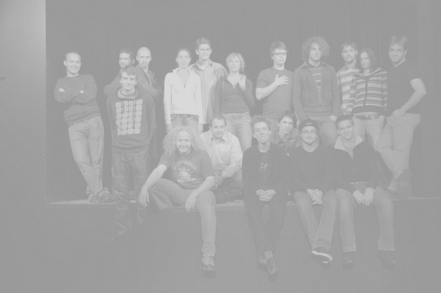
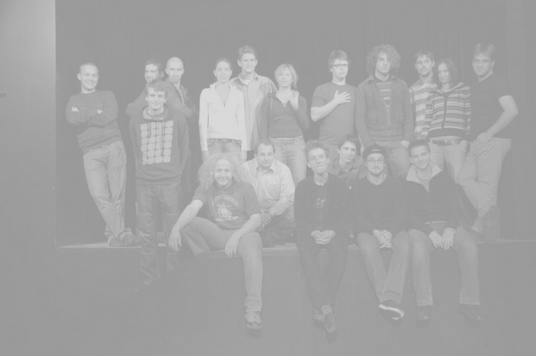

Výbìrový soubor Hrobeso
Vedoucí: Ludìk Horký, Denisa Nová a Lucie Valenová
Vìkové zaøazení: VŠ + dospìlí (vìkový prùmìr 25 let)
Zkoušky: ÚT 18.30—21.00
Kontakt:
E/ ludek.horky@email.cz
T/ 732 547 461
Zápisné do Hrobesa èiní 2.000,- Kè na školní rok (lze platit pololetnì)
Hledáme: Soubor momentálnì nehledá nové èleny, ale ani se jim zásadnì nebrání. Na podmínkách pøijetí se mohou pøípadní vážní zájemci informovat u vedoucího souboru na T/ 732 547 461
Co dìláme: Hrobeso se zamìøuje na tvorbu èinoherního a hudebního divadla pro dospìlé diváky. V jeho poetice dominují ironie a sarkasmus. V souvislosti s pøípravou inscenací se systematicky vìnujeme upevòování souboru a rozvíjení jeho hereckého potenciálu.
Naše aktuální inscenace: Momentálnì hrajeme v Radaru divadelní inscenace Mnoho povyku pro nic, Sajns Fikšn a Frank pátý. Pøipravujeme novou norskou hru Jméno (Jon Fosse).
Úspìchy: Soubor byl se svými inscenacemi opakovanì nominován na úèast na rùzných národních pøehlídkách a soutìžních festivalech vèetnì Jiráskova Hornova a reprezentoval ÈR na mezinárodních festivalech v Rakousku a Chorvatsku, kde získala inscenace Mnoho povyku pro nic v mezinárodní konkurenci hlavní cenu.
Chronologický soupis inscenací:
 L. Smoljak, Z. Svìrák: Lochneska (režie Ludìk Horký, asistent režie Jana Øehoøková)
L. Smoljak, Z. Svìrák: Lochneska (režie Ludìk Horký, asistent režie Jana Øehoøková)
Fr. Pavlíèek: Malá moøská víla (režie Ludìk Horký, asistent režie Jana Øehoøková)
Verše psané na vodu (režie Ludìk Horký a Jana Øehoøková)
Písnì vrbového proutku (režie Veronika Schönová a Martin Èepelík)
M. Bulgakov: Purpurový ostrov (režie Ludìk Horký, asistent režie Jana Øehoøková)
F. X. Vamberk: Blázinec v první poschodí (režie Jiøí Panzner, asistent režie Štìpán Pácl)
M. Kundera: Monology (režie Kateøina Tyllerová a Markéta Jurná)
W. Shakespeare: Sen noci svatojánské (režie Radka Tesárková)
R. Bradbury: Oblek znaèka Bardbury (režie Ludìk Horký a Pavlína Schejbalová)
O pøekrásné Vasilise (dramatizace a režie Ludìk Horký)
Allenova inspirace Shakespearovým Snem noci svatojánské /W. Allen: Sex noci svatojánské/ (režie Ludìk Horký)
W. Shakespeare: Mnoho povyku pro nic (inscenace nominována na Divadelní Tøebíè 2005
 a na Jiráskùv Hronov 2005, reprezentovala ÈR na mezinárodním festivalu Jadran 2006;
a na Jiráskùv Hronov 2005, reprezentovala ÈR na mezinárodním festivalu Jadran 2006;
režie Ludìk Horký, režijní spolupráce Jana Kobesová)
Vášová, Varga, Peteraj, Hammel: Cyrano z pøedmìstí (režie Ludìk Horký)
M. Palla: Sajns Fikšn (režie Denisa Nová)
W. Shakespeare: Hamlet (režie Jana Kobesová)
Èlenové souboru:
Dámy: Bìla FUKOVÁ, Kristýna HOLEÈKOVÁ (na mateøské dovolené ;-)), Markéta JURNÁ, Jana KOBESOVÁ, Jana PLESKAÈOVÁ, Kateøina TYLLEROVÁ, Týna TYLLEROVÁ
Pánové: Filip BEITL, Martin ÈEPELÍK, Jiøí HLÁSEK, Kryštof MENDE, Adam ONDØICH, Dan PAROBEK, Ondøej PEÈENÝ, Radomír PIVODA, Ján POLÁK, Luboš PØÍVOZNÍK, Petr PUCHERNA, Radek ŠEDIVÝ, Jakub TVRDÍK, Mikoláš TYC, Jakub ZAGAR
Se souborem pohostinsky spolupracují:
Jiøí Panzner, Vojtìch Dyk, Jana Øehoøková, Lucie Valenová, Bára Mišíková, Jakub Baran, Martin Tafat, Lenka Zahradnická a jako záskokáøi v záloze Pavel Richta a Vojta Štulc.

Vedoucí: Ludìk Horký, Denisa Nová a Lucie Valenová
Vìkové zaøazení: VŠ + dospìlí (vìkový prùmìr 25 let)
Zkoušky: ÚT 18.30—21.00
Kontakt:
E/ ludek.horky@email.cz
T/ 732 547 461
Zápisné do Hrobesa èiní 2.000,- Kè na školní rok (lze platit pololetnì)
Hledáme: Soubor momentálnì nehledá nové èleny, ale ani se jim zásadnì nebrání. Na podmínkách pøijetí se mohou pøípadní vážní zájemci informovat u vedoucího souboru na T/ 732 547 461
Co dìláme: Hrobeso se zamìøuje na tvorbu èinoherního a hudebního divadla pro dospìlé diváky. V jeho poetice dominují ironie a sarkasmus. V souvislosti s pøípravou inscenací se systematicky vìnujeme upevòování souboru a rozvíjení jeho hereckého potenciálu.
Naše aktuální inscenace: Momentálnì hrajeme v Radaru divadelní inscenace Mnoho povyku pro nic, Sajns Fikšn a Frank pátý. Pøipravujeme novou norskou hru Jméno (Jon Fosse).
Úspìchy: Soubor byl se svými inscenacemi opakovanì nominován na úèast na rùzných národních pøehlídkách a soutìžních festivalech vèetnì Jiráskova Hornova a reprezentoval ÈR na mezinárodních festivalech v Rakousku a Chorvatsku, kde získala inscenace Mnoho povyku pro nic v mezinárodní konkurenci hlavní cenu.
Historie: Hrobeso je generaèní divadelní soubor. Vzniklo v lednu 1997, kdy jeho aktérùm nebylo v prùmìru víc než tøináct let. Zrodilo se rozdìlením tehdejšího jediného velkého dìtského výbìrového souboru v rámci Ty-já-tru na dva menší podle vìku. Mladší z nich byl pojmenován CO?! a starší Hrobeso. Vìkové urèení Hrobesa rostlo úmìrnì vìku jeho èlenù. Soubor vede od poèátku Ludìk Horký. Jeho partnerkou ve vedení souboru byla v prvních šesti letech historie Hrobesa Jana Øehoøková. Hrobeso postupnì nastudovalo pohádkovou komedii Zdeòka Svìráka a Ladislava Smoljaka Lochneska, dále Verše psané na vodu, Písnì Vrbovýho proutku, Malou moøskou vílu Františka Pavlíèka, Purpurový ostrov Michaila Bulgakova, Blázinec v prvním poschodí F. F. Šamberka, Monology Milana Kundery a Shakespearùv Sen noci svatojánské. S poslednì jmenovanou inscenací se zúèastnilo národních pøehlídek Popelka Rakovník, Šrámkùv Písek a mezinárodní pøehlídky Jugendtheatr v Rakousku. Dále nastudovalo jednoaktovku Raye Bradburyho Nádherný zmrzlinový oblek, klasickou ruskou pohádku O pøekrásné Vasilise, Sex noci svatojánské Woodyho Allena a pùvodní slovenský muzikál P. Hammela, P.Vargy, K. Peteraje a A.Vášové Cyrano z pøedmìstí. V souèasné dobì má na svém repertoáru Shakespearovu komedii Mnoho povyku pro nic, bláznivou kosmickou frašku Sajns Fikšn od Mariána Pally a ještì jeden shakespearovský manuál pro ty, kdo nevìdí, oè tu bìží. Inscenace se jmenuje Hamlet. Hrobeso vede Ludìk Horký. Hereckým pedagogem souboru je Denisa Nová. Druhou režisérkou souboru je Jana Kobesová. Práci produkèní obstarává Lucie Valenová. Jako kmenový výtvarník spolupracuje se souborem Mirka Hrdinová. Vzhledem k tomu, že má soubor v rámci Dìtského dramatického souboru Ty-já-tr dnes již specifické vìkové zakotvení, provozuje souèasnì vlastní webové stránky www.hrobeso.com, o které peèuje Jakub Zagar.
Chronologický soupis inscenací:
Èlenové souboru:
Dámy: Bìla FUKOVÁ, Kristýna HOLEÈKOVÁ (na mateøské dovolené ;-)), Markéta JURNÁ, Jana KOBESOVÁ, Jana PLESKAÈOVÁ, Kateøina TYLLEROVÁ, Týna TYLLEROVÁ
Pánové: Filip BEITL, Martin ÈEPELÍK, Jiøí HLÁSEK, Kryštof MENDE, Adam ONDØICH, Dan PAROBEK, Ondøej PEÈENÝ, Radomír PIVODA, Ján POLÁK, Luboš PØÍVOZNÍK, Petr PUCHERNA, Radek ŠEDIVÝ, Jakub TVRDÍK, Mikoláš TYC, Jakub ZAGAR
Se souborem pohostinsky spolupracují:
Jiøí Panzner, Vojtìch Dyk, Jana Øehoøková, Lucie Valenová, Bára Mišíková, Jakub Baran, Martin Tafat, Lenka Zahradnická a jako záskokáøi v záloze Pavel Richta a Vojta Štulc.
